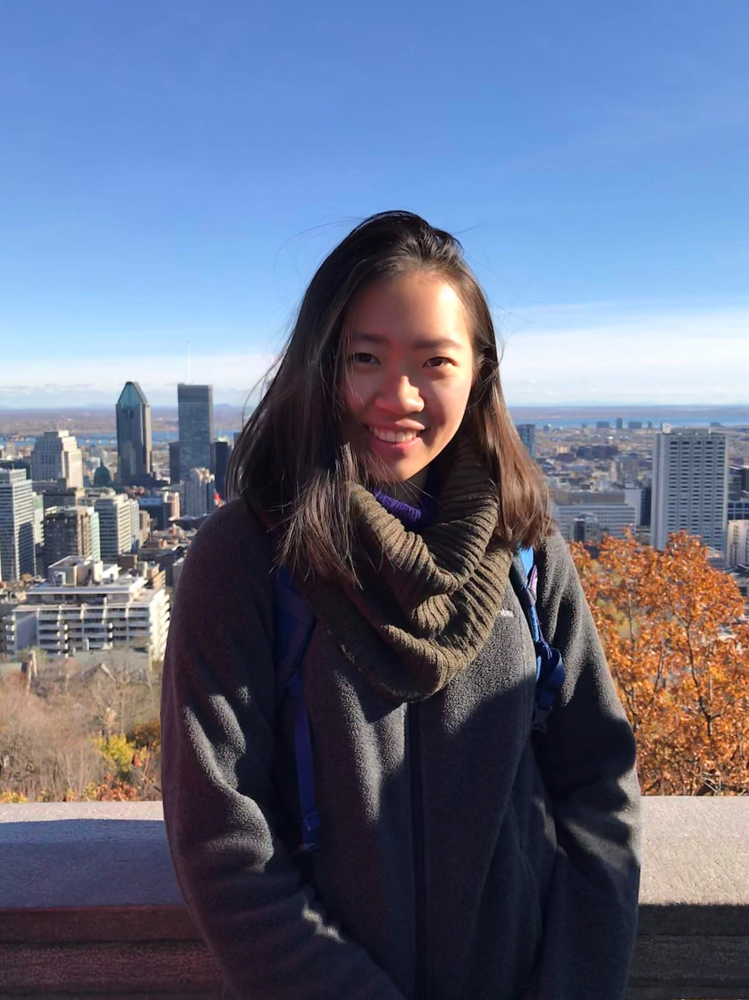

I am a Research Scientist at Meta Reality Labs Research. I work on co-designing hardware and software, particularly utilizing novel vision sensors to rethink computational photography and computer vision algorithms.
Previously, I completed my PhD in Electrical Engineering at Stanford, advised by Professor Gordon Wetzstein and supported by the NSF Graduate Research Fellowship. In my undergrad, I had the privilege to research under Professor Keren Bergman at Columbia University, Professor Michal Bajcsy at the Institute for Quantum Computing, and Dr. Darwin Serkland at Sandia National Laboratories. Outside of research, I enjoy cartooning and painting.
CONTACT
Email: haleyso [at] stanford [dot] edu